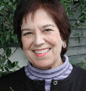
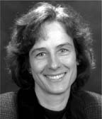
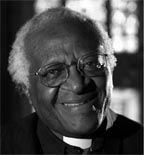

Care for the Journey: Speakers
Hear what a renowned author, hospice staff, volunteers and clergy have to say about Care For The Journey...
Care for the Journey is an acclaimed series of audio CDs containing spoken word over music for professional caregivers by these educators, healthcare professionals and wellness experts. Read the reviews about Care for the Journey and testimonials from caregivers like you.
These inspirational speakers can be heard on Care for the Journey, Volumes 1 and 2.


Angeles Arrien, PhD
Angeles Arrien is an anthropologist, educator, award-winning author, and corporate consultant. She lectures worldwide, conducting workshops that bridge cultural anthropology, psychology, and mediation skills. Her work with multi-cultural issues, mediation, and conflict resolution has been used with the International Rights Commission and the World Indigenous Council. She has also presented her material on the Cable News Network (CNN). She is the founder and president of the Foundation for Cross-Cultural Education and Research. Dr. Arrien's research and teaching have focused on values and beliefs shared by humanity cross-culturally, and on the integration and application of multi-cultural wisdoms in contemporary settings. She teaches universal components of leadership skills, communication, health care, and education. Her work reveals how indigenous wisdoms are relevant in our families, professional lives, and our relationship with the Earth. Within the medical community, Dr. Arrien has consulted with Kaiser Permanente Group, Pride Institute of Colorado, California Pacific Medical Center, Sutter Community Hospitals, Planetree Foundation, Columbia Rose Medical Center, and American Association of Critical Care Nurses.
She is the author of The Four-Fold Way: Walking the Paths of the Warrior, Teacher, Healer and Visionary, published by HarperCollins, San Francisco; Signs of Life: The Five Universal Shapes and How to Use Them, winner of the 1993 Benjamin Franklin Award published by Tarcher/Putnam; and The Nine Muses: A Mythological Path to Creativity also by Tarcher/Putnam. Working Together: Diversity As Opportunity published by Berrett-Koehler is in its second printing. She was bestowed The New Dimensions Broadcaster Award, 'Casting Seeds in a Wide Arc'. The California Pacific Medical Center honored Angeles with the Annual Institute for Health and Healing Art, Science and Soul of Healing Award in 1999. She is a Fellow of the Institute of Noetic Sciences and has received three honorary doctorate degrees in recognition of her work.

Joan Borysenko, PhD
Dr. Joan Borysenko is trained as a medical scientist and is also a licensed psychologist. She received her doctorate from the Harvard Medical School where she also completed post-doctoral fellowships in cancer cell biology, behavioral medicine, and psychoneuroimmunology. She was the co-founder and former director of the Mind/Body clinical programs at the Beth Israel/Deaconess Medical Center in Boston and a former Instructor in Medicine at the Harvard Medical School.
Author of eleven books and several best-selling audio programs, she wrote and starred in the 2001 Public Television special, Inner Peace for Busy People. Truly a woman for our times, her brilliance, sense of humor, and compassion have thrilled hundreds of thousands of people worldwide.
A powerful and articulate writer and speaker, Dr. Borysenko has a clear personal vision- to bring science, medicine and spirituality together in the service of healing. She is well known for her ability to bridge diverse disciplines and open up new lines of communication.
A widely sought expert for the media, she has appeared on "Oprah" and many major television programs. Her work has also been featured in diverse newspapers and magazines, including such publications as U.S. News and World Report, the Wall Street Journal, USA Today, Prevention. Shape, Glamour, Vogue, Yoga Journal and Bottom Line Personals.

Ira Byock, MD
Ira Byock, M.D., is a palliative care physician and long-time public advocate for improving care through the end of life. He is co-founder and principal investigator of Life's End Institute: Missoula Demonstration Project, Inc, a community-based research and quality improvement organization focused on end-of-life experience and care. He is Director of Palliative Medicine at Dartmouth Hitchcock Medical Center and faculty member at Dartmouth Medical School. Board certifications include Family Practice, Emergency Medicine (1988-1998) and Hospice and Palliative Medicine. Nationally, Dr. Byock directs the Promoting Excellence in End-of-Life Care national grant and technical assistance program of The Robert Wood Johnson Foundation. He is a past president of the American Academy of Hospice and Palliative Medicine (1997) and recipient of the Academy's Distinguished Service Award in 2002. He received the National Hospice and Palliative Care Organization prestigious Person of the Year Award (1995) and the National Coalition of Cancer Survivorship's Natalie Davis Springarn Writers Award.
His first book, Dying Well (Putnam/Riverside, 1997), has become a core reading on the subject. He has since co-authored A Few Months to Live (Georgetown University Press, 2001) and co-edited Palliative and End-of-Life Pearls (Hanley & Belfus, 2002), a collection of clinical case studies. His latest book, The Four Things That Matter Most, is written for the general public and is published by The Free Press, a division of Simon & Schuster. Appearances on national television and radio include: "Letting Go: A Hospice Journey" (HBO), "Final Blessings" (NBC), "Nightline" (ABC), "Before I Die: Medical Care and Personal Choices" (PBS), "All Things Considered" (NPR), "Dateline" (NBC), "60 Minutes with Ed Bradley" (CBS), and "Summit for a Cure" (MSNBC).

Jeremy Geffen, MD
Jeremy R. Geffen MD, FACP is a board-certified medical oncologist, a pioneer in the field of integrative medicine, and President of Geffen Visions International (GVI), a company devoted to exploring multidimensional approaches to life and medicine. A gifted and inspiring writer, speaker and seminar leader, he is the author of the highly-acclaimed book, The Journey Through Cancer and an audiotape program, The Seven Levels of Healing.
Described as an "oncologist of the future", Dr. Geffen practiced medical oncology and hematology in Vero Beach, Florida for 11 years, before leaving clinical practice in 2003 to work full-time for GVI. From 1994 to 2003 he ran the Geffen Cancer Center and Research Institute, one of the first cancer centers in the United States designed explicitly to combine state-of-the-art conventional cancer treatments with a broad array of complementary therapies and mind-body approaches to healing.

Naomi Judd, RN
In 1991, after selling over 20 million albums and videos in a mere seven years and at the pinnacle of their phenomenal career, The Judds' reign came to an abrupt end. Naomi was diagnosed with Hepatitis C, a potentially fatal chronic liver disease that forced her retirement. With unwavering optimism and characteristic inner strength, Naomi stepped out of the spotlight to explore paths that have led to new successful endeavors.
Today, she is completely cured of the Hepatitis C virus and uses the strength of her own experiences as spokesperson for the America Liver Foundation. In 1991, Naomi created the Naomi Judd Education and Research Fund, using her household name and personal time to raise invaluable awareness of the deadly Hepatitis C virus as well as research funds for the American Liver Foundation.
Though her creativity continues to flow through music and writing, today Naomi also expresses her energy on humanitarian activities, social issues and personal growth education. Her natural ability to act as a translator between academic communities and everyday people makes her a truly unique figure. Her background and knowledge on various health and family related issues has led to invitations to speak at countless conventions, seminars and high profile summits as well as numerous media awareness campaigns and Capitol Hill hearings. Naomi Judd, former registered nurse, well versed in women's health concerns, sings the benefits of harmony between mind, body and spirit. Naomi has addressed the heads of the National Institute of Health (NIH) and the 2001 Bio-Technology Convention. Naomi is on Dr. Andrew Weill's board of directors as an advocate for integrative approaches to medicine incorporated alongside more modern technology.

Tom Lant, PhD, RN
Thomas W. Lant PhD, RN, MN, began his journey into the work known as "The Spirit of CareGiving™" as a registered nurse. Tom is recognized as a national nursing leader holding executive level positions in health care leadership at Sinai Hospital of Detroit, St. Vincent Medical Center, and The Johns Hopkins Hospital. In addition Tom was the Practice Leader in organizational change management for Ernst & Young's southeastern division.
Tom holds advanced degrees in nursing and organizational development and has been on the Board of Directors of The American Organization of Nurse Executives, Michigan Society of Hospital Administrators and Greater Detroit Health Care Council.
Tom is the principal owner of Lant & Associates, Inc. and creator of the work called "The Spirit of CareGiving™". Through this body of knowledge, organizations have the opportunity to create a healing environment for all caregivers; the seven distinctions of caring have become recognized as a contribution to healthcare workers worldwise.
Christiane Northrup, MD
Christiane Northrup, M.D., a visionary pioneer in her field, is a board certified OB/GYN physician who helps empower women to tune in to their inner wisdom and take charge of their health. Her latest book, Mother-Daughter Wisdom: Creating a Legacy of Physical and Emotional Health (Bantam 2005) explores how and why the mother-daughter bond is at the head waters of a woman's health. She is also the host of a PBS special on the same topic (premiers March 2005). In addition to this, Dr. Northrup is the author of two New York Times best-selling books, Women's Bodies, Women's Wisdom (Bantam 1998) and The Wisdom of Menopause (Bantam, 2001). She has also hosted four previous successful public television specials and authors a popular monthly e-letter on her website, www.drnorthrup.com, and a print newsletter, The Dr. Christiane Northrup Newsletter: Health Wisdom for Today's Woman. Her work has been featured on the "Oprah Winfrey Show", "The Today Show", "NBC Nightly News with Tom Brokaw", "The View", and "Good Morning America". She and her family live in Maine.

Christina Puchalski, MD
Dr. Puchalski, MD, FACP, has pioneered the development of numerous educational programs for undergraduate, graduate, and postgraduate medical education in spirituality and medicine. Her spirituality curriculum at The George Washington University was one of the first in the country and received the John Templeton Award for Spirituality and Medicine. Since 1996, she has been directing an award program for medical school curricula in spirituality and health nationally. Her research expertise includes the role of spirituality in health and end-of-life care, the role of clergy in health and end-of-life care, and evaluation of education programs in spirituality and medicine.
Dr. Puchalski is Co-Chair of a national education conference co-sponsored by the Association of American Medical Colleges (AAMC) and Course Co-Director of Harvard Medical School and the Mind/Body Medical Institute's annual Spirituality & Healing in Medicine conference. Dr. Puchalski is Founder and Director of The George Washington Institute for Spirituality and Health at The George Washington University in Washington, DC and Associate Professor in the Departments of Medicine and Health Care Sciences at The George Washington University. She has been published widely in peer-reviewed journals as well as other national journals and media outlets, and has appeared in numerous national news programs.

Rachel Naomi Remen, MD
Rachel Naomi Remen, M.D. is one of the earliest pioneers in the mind/body holistic health movement and the first to recognize the role of the spirit in health and recovery from illness. She is the author of the New York Times bestseller, Kitchen Table Wisdom, and the national bestseller, My Grandfather's Blessings, Co-founder and Medical Director of the Commonweal Cancer Help Program featured in the ground-breaking 1993 Bill Moyer's PBS series "Healing and the Mind," Founder and Director of the Institute for the Study of Health and Illness at Commonweal, Clinical Professor of Family and Community Medicine at UCSF School of Medicine, and Director of the innovative UCSF course The Healer's Art, presently taught at 35 medical schools nationwide.
Dr. Remen is a nationally recognized medical reformer and medical educator who sees the practice of medicine as a spiritual path. In recognition of her work she has received several honorary degrees and has been invited to teach in medical schools and hospitals throughout the country. "The Healer's Art", her holistic curriculum for medical students, and her many CME programs for physicians enable physicians at all levels of training to remember their calling, and both strengthen and deepen their commitment to service.

Desmond Tutu
Bishop Desmond Tutu was born in 1931 in Klerksdorp, Transvaal. His father was a teacher, and he himself was educated at Johannesburg Bantu High School. After leaving school he trained first as a teacher at Pretoria Bantu Normal College and in 1954 he graduated from the University of South Africa. After three years as a high school teacher he began to study theology, being ordained as a priest in 1960. The years 1962-66 were devoted to further theological study in England leading up to a Master of Theology. From 1967 to 1972 he taught theology in South Africa before returning to England for three years as the assistant director of a theological institute in London. In 1975 he was appointed Dean of St. Mary's Cathedral in Johannesburg, the first black to hold that position. From 1976 to 1978 he was Bishop of Lesotho, and in 1978 became the first black General Secretary of the South African Council of Churches. Tutu is an honorary doctor of a number of leading universities in the USA, Britain and Germany.

Jean Watson, PhD, RN
Dr. Jean Watson is Distinguished Professor of Nursing and holds an endowed Chair in Caring Science at the University of Colorado Health Sciences Center. She is founder of the original Center for Human Caring in Colorado and is a Fellow of the American Academy of Nursing. She previously served as Dean of Nursing at the University Health Sciences Center and is a Past President of the National League for Nursing. She is a widely published author and recipient of several awards and honors, including an international Kellogg Fellowship in Australia, a Fulbright Research Award in Sweden and six Honorary Doctoral Degrees.
Clinical nurses and academic programs throughout the world use her published works on the philosophy and theory of human caring and the art and science of caring in nursing. At the University of Colorado, Dr. Watson holds the title of Distinguished Professor of Nursing; the highest honor accorded its faculty for scholarly work. In 1999 she assumed the Murchison-Scoville Chair in Caring Science, the nation's first endowed chair in Caring Science, based at the University of Colorado Health Sciences Center.
Her latest books range from empirical measurements of caring, to new postmodern philosophies of caring and healing. Her latest book is Caring Science as Sacred Science (2005) Philadelphia: FA Davis. These latest works seek to bridge paradigms as well as point toward transformative models for the 21st century.